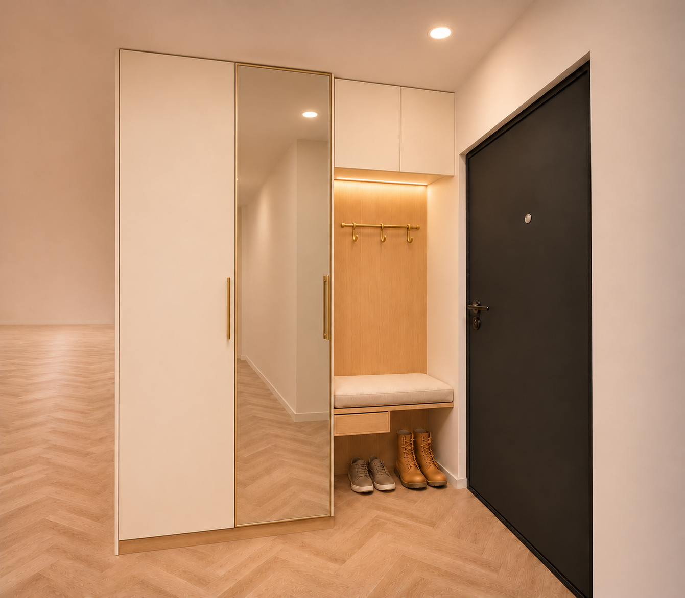

Прихожая
Вариант для проработки и лист контрольного замера. Размеры помещения взяты из плана B01, габариты мебели — из эскиза v47.
Светлый шкаф и гладкая дубовая ниша
Рекомендую взять за основу вариант 1. Гладкую панель у крючков и за обувью проще протирать. Для ключей — отдельный небольшой крючок на панели со стороны входа. Точное место проверить с открытой входной дверью и висящей курткой.
- У входа — банкетка 575 × 420 мм, сиденье на высоте 460 мм. Ящик для сухих тапочек занимает часть ширины. Обувь ставится в один ряд на пол, высокие ботинки — в зоне без ящика.
- Дальше от двери — шкаф 1050 × 580 × 2700 мм. Ближняя к банкетке секция — для одежды, зеркало на её дверце. Дальняя секция предусмотрена под щит. Переход в коридор за шкафом открыт.
- Отделка — молочный фасад, светлый дуб, скрытая подсветка ниши. Пол прихожей — декор «Дуб Синистра» по проекту квартиры. Решение по полу.

Что показала проверка
Проверяйте весь ход полотен. В условном примере с дальними петлями створки одежды при 90° есть зазор, а во время движения створка задевает открытую входную дверь. Проверка обоих порядков открывания на плане.
- Щит нужно привязать к мебели. Ноль — чистовой внутренний угол у входной стены, отсчёт вдоль левой стены к коридору. По эскизу банкетка занимает отметки 25–600 мм, шкаф — 600–1650 мм. При стенках по 18 мм дальняя секция щита в свету приходится на 1082–1632 мм. Сравнить с обеими кромками фактического корпуса и проверить ход его дверцы. Если щит не вписывается, согласовать положение секции или возможность переноса по месту. Ведомость инженерных точек.
- Корпус 2700 мм требует проверки способа сборки. При глубине корпуса 562 мм его диагональ составляет около 2758 мм. Для подъёма собранного прямоугольного корпуса с пола в вертикальное положение через эту диагональ высоты 2750 мм из S09 недостаточно. Предусмотреть вертикальную сборку или согласовать деление корпуса с мебельщиком после чистового замера.
- Примерить ручки вместе с дверьми. При закрытом шкафе расчётный остаток до противоположной плоскости B01 — 1510 мм. При условном открытом на 90° фасаде одежды шириной 470 мм остаётся 1040 мм, при створке щита шириной 574 мм — 936 мм. Проверить совместное открывание с D1, учитывая петли, ручки, коробку и отделку. План проходов.

Лист контрольного замера
Записывайте чистовые размеры в миллиметрах. Отметки по левой стене — от угла у входа, высоты — от чистого пола. Если отделка ещё не готова, укажите её ожидаемую толщину отдельно.
| Что проверить | Где и как измерить | Факт, мм |
|---|---|---|
| Полезная длина левой стены | На уровне пола, сиденья и верха шкафа. Указать плинтус и выступы. | / / |
| Высота и поперечный проход | Минимальная высота над шкафом и на месте сборки. Расстояние до противоположной стены в двух точках напротив шкафа и банкетки. | / / |
| Входная дверь D1 | Левая и правая привязки коробки, направление открывания, сторона петель и выступ ручки. Для двери есть отдельный полевой лист. | / |
| Щит ЭЩ-03 и розетки E-03 | Обе кромки щита от угла, низ и верх от пола, выступ от стены, сторона и угол открывания. Для розеток — оси и высоты. Сделать фото с рулеткой. | Привязки Высоты Выступ |
| Обувь и тапочки | Ширина двух реальных пар в один ряд, глубина самой длинной пары и высота ботинка. Сопоставить с чистым просветом под сиденьем и внутренним размером ящика. | / / |
Для проверки на месте отметьте малярной лентой передние грани шкафа и банкетки на 580 и 420 мм от левой стены. Откройте входную дверь, проверьте ручку, посадку на банкетку и место для обуви. Запишите минимальный зазор и приложите фото.
Развёртка шкафа и банкетки · Расчёты и ограничения v47 · Сравнение отделок